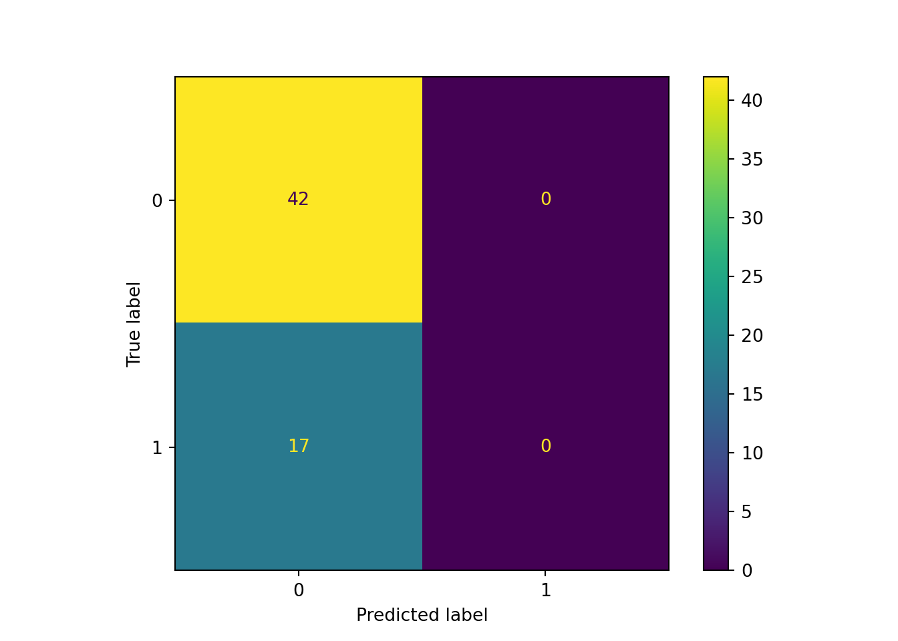
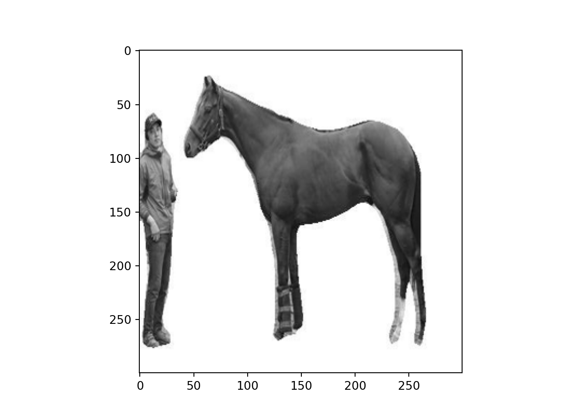
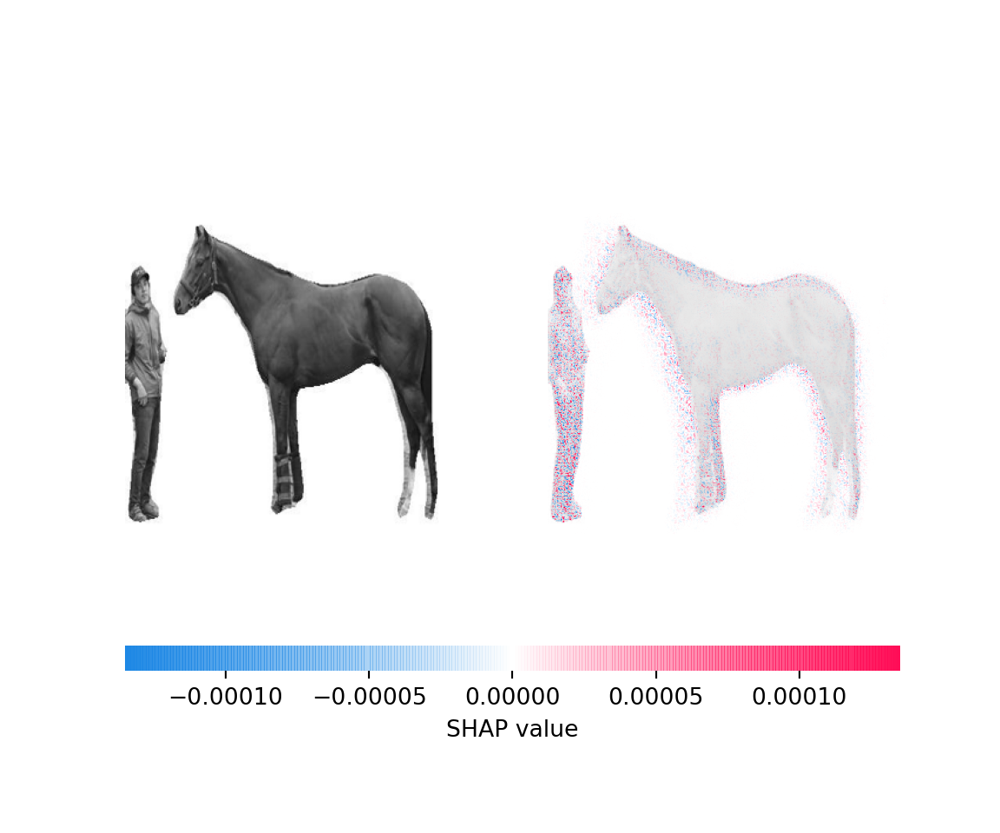

PytorchのPre-trainedモデルで馬体写真の背景を自動トリミングする
おはこんばんにちは。前回、競走馬の馬体写真からCNNを用いて順位を予想するモデルを構築しました。結果は芳しくなく、特にshap値を用いた要因分析を行うと馬体よりも背景の厩舎に反応している様子が見えたりと分析の精緻化が必要となりました。今回はPytorchのPre-trainedモデルを用いて馬体写真から背景を切り出し、馬体のみとなった写真で再分析を行いたいと思います。
1. Pre-trainedモデルのダウンロード
コードはこちらのものを参考にしています。まず、パッケージをインストールします。
import numpy as np
import cv2
import matplotlib.pyplot as plt
import torch
import torchvision
from torchvision import transforms
import glob
from PIL import Image
import PIL
import os
学習済みモデルのインストールを行います。
#学習済みモデルをインストール
device = torch.device("cuda:0" if torch.cuda.is_available() else "cpu")
model = torchvision.models.segmentation.deeplabv3_resnet101(pretrained=True)
model = model.to(device)
model.eval()
どうやら全てのPre-trainedモデルは、同じ方法で正規化された形状$（N, 3, H, W）$の3チャンネルRGB画像のミニバッチを想定しているようです。ここで$N$は画像の数、$H$と$W$は少なくとも224ピクセルであることが想定されています。画像は、[0, 1]の範囲にスケーリングされ、その後、平均値＝[0.485, 0.456, 0.406]と標準値＝[0.229, 0.224, 0.225]を使用して正規化される必要があります。ということで、前処理を行う関数を定義します。
#前処理
preprocess = transforms.Compose([
transforms.ToTensor(),
transforms.Normalize(mean=[0.485, 0.456, 0.406], std=[0.229, 0.224, 0.225]),
])
2. 背景削除処理の実行
では、前回記事のseleniumを用いたコードで収集した画像を読み込み、1枚1枚背景削除処理を行っていきます。
#フォルダを指定
folders = os.listdir(r"C:\Users\aashi\umanalytics\photo\image")
#それぞれのフォルダから画像を読み込み、Image関数を使用してRGB値ベクトル(numpy array)へ変換
for i, folder in enumerate(folders):
files = glob.glob("C:/Users/aashi/umanalytics/photo/image/" + folder + "/*.jpg")
index = i
for k, file in enumerate(files):
img_array = np.fromfile(file, dtype=np.uint8)
img = cv2.imdecode(img_array, cv2.IMREAD_COLOR)
h,w,_ = img.shape
input_tensor = preprocess(img)
input_batch = input_tensor.unsqueeze(0).to(device)
with torch.no_grad():
output = model(input_batch)['out'][0]
output_predictions = output.argmax(0)
mask_array = output_predictions.byte().cpu().numpy()
Image.fromarray(mask_array*255).save(r'C:\Users\aashi\umanalytics\photo\image\mask.jpg')
mask = cv2.imread(r'C:\Users\aashi\umanalytics\photo\image\mask.jpg')
bg = np.full_like(img,255)
img = cv2.multiply(img.astype(float), mask.astype(float)/255)
bg = cv2.multiply(bg.astype(float), 1.0 - mask.astype(float)/255)
outImage = cv2.add(img, bg)
Image.fromarray(outImage.astype(np.uint8)).convert('L').save(file)
行っている処理はPre-trainedモデルで以下のようなmask画像を出力し、実際の画像のnumpy配列とmask画像を統合して、背景削除画像を生成しています。出力例は以下のような感じです。
plt.gray()
plt.figure(figsize=(20,20))
plt.subplot(1,3,1)
plt.imshow(img)
plt.subplot(1,3,2)
plt.imshow(mask)
plt.subplot(1,3,3)
plt.imshow(outImage)
plt.show()

plt.close()
フォルダはこんな感じです。うまく処理できているものもあれば調教師の方が映ってしまっているのもありますね。物体を識別して、馬だけをmaskする方法もあるとは思いますがこのモデルでは物体のラベリングまではできないのでこのまま進みます。

3. CNNを用いた分析
ここからは前回記事と同じ内容です。結果のみ掲載します。
## Test accuracy: 0.711864406779661
## <sklearn.metrics._plot.confusion_matrix.ConfusionMatrixDisplay object at 0x000000003694DFC8>

まったく識別できていません。全ての馬が負値の予想になっています。馬体写真には順位を予測するような特徴量はないんでしょうか。それともG1の出走馬ではバラツキがなく、識別不可能なのでしょうか。いずれいにせよ、ちょっと厳しそうです。
4. Shap値を用いた結果解釈
前回同様、どのように失敗したのかshap値を使って検証してみましょう。この画像を例として使います。
plt.imshow(X_test[4])
plt.show()

plt.close()
import shap
background = X_resampled[np.random.choice(X_resampled.shape[0],100,replace=False)]
e = shap.GradientExplainer(model,background)
shap_values = e.shap_values(X_test[[4]])
shap.image_plot(shap_values[1],X_test[[4]])

前足から顔にかけてを評価しているようです。意外に臀部を評価している様子はありません。
5.まとめ
厩舎背景を削除し、再実行してみましたが結果変わらずでした。PyTorchを使ったり、背景削除を行ういい経験にはなりましたが結果は伴わずということで馬体写真はいったんここでストップです。